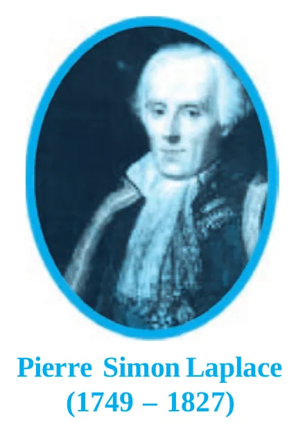
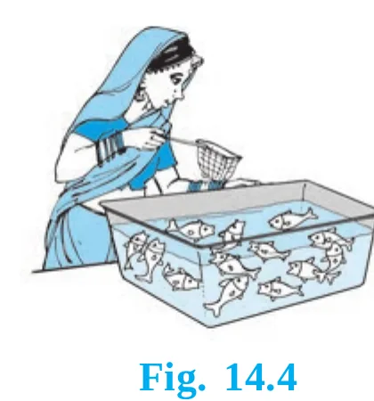
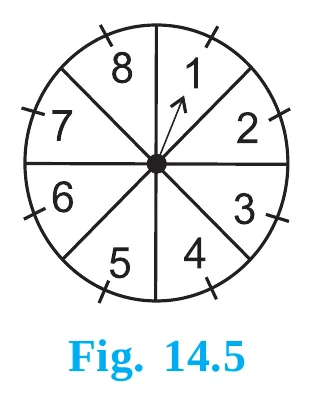
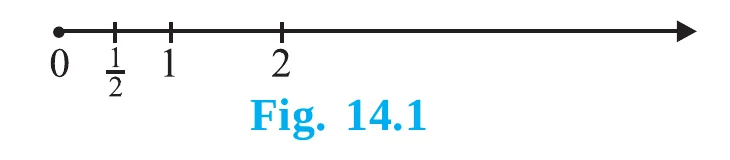
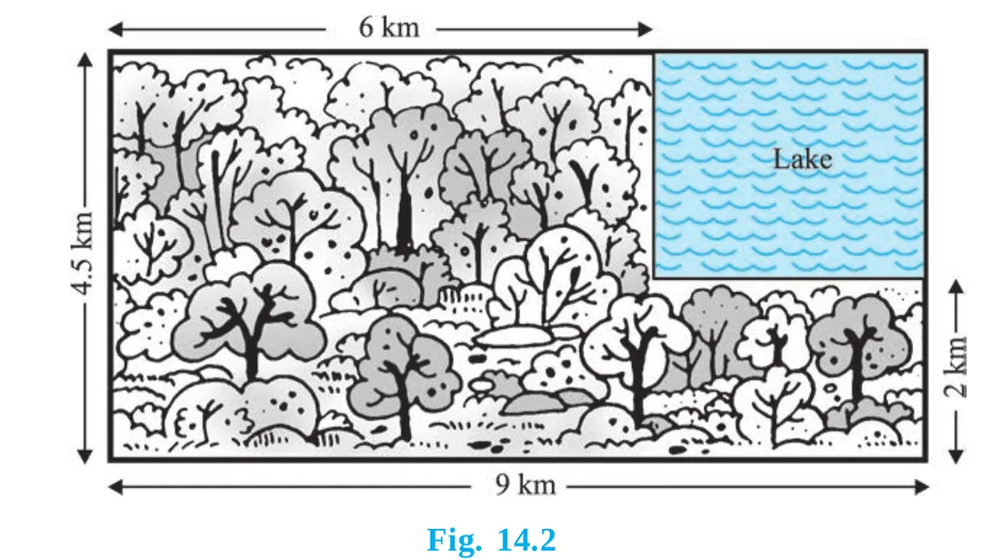
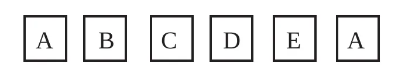
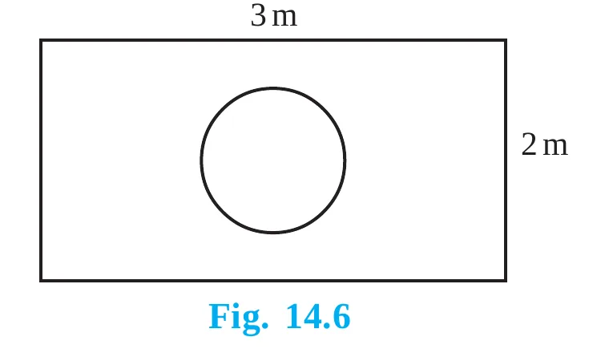

📌 Chapter snapshot
- Chapter 14 of NCERT Class 10 Mathematics (reprint 2026-27): one section (14.1), 13 solved examples and one exercise of 25 questions.
- Part of the unit Statistics and Probability (11 marks in the 80-mark paper). Probability alone usually gives 4 to 7 marks: two or three 1-mark MCQs, often an Assertion–Reason, and a 2- or 3-mark question on two dice or cards.
- Asked every year: complement (0.79 → 0.21, 2024), cards (red face card, 2025; lost card, 2024), two dice (difference 2, 2025; same number, 2026; sums, 2024), bag of balls (2023).
- Examples 10 and 11 and Exercise 20 (probability by length and area) are marked “not from the examination point of view”. Read them for understanding only.
Why a theoretical approach?
“The theory of probabilities and the theory of errors now constitute a formidable body of great mathematical interest and of great practical importance.” – R.S. Woodward
Suppose a coin is tossed at random. Before it lands we already know it can show only a head or a tail. Can we say how likely each one is without tossing it a thousand times? Yes, if we can make a sensible assumption. That is what this chapter is about.
🪙 Fair (unbiased) coin
Symmetrical, so there is no reason for it to fall more often on one side. We ignore it landing on its edge.
🎲 Fair die
For us, a die always means a fair die. Outcomes 1, 2, 3, 4, 5, 6 have the same chance of showing up.
🎯 Random
“Random toss” or “drawn at random” means the coin falls freely, or every item is equally likely to be picked, with no bias.
Equally likely outcomes
Outcomes are equally likely when each has the same chance of happening. Head and tail of a fair coin are equally likely; so are the six faces of a fair die.
Are outcomes always equally likely? No. A bag has 4 red balls and 1 blue ball. You draw one ball without looking.
- The outcomes “red” and “blue” are not equally likely: red is more likely.
- But drawing any one particular ball is equally likely: each of the 5 balls has the same chance.
- So count the balls, not the colours: P(red) = 45, P(blue) = 15.
From here on, NCERT assumes that every experiment has equally likely outcomes.
Experimental probability vs theoretical probability
In Class IX you met the experimental (empirical) probability:
Repeating is not always possible: we cannot launch a satellite again and again to see how often it fails, or wait for many earthquakes to see how often a tall building falls. When we can assume the outcomes are equally likely, we can find the exact probability without doing the experiment. This is the theoretical (or classical) probability.

Tap to zoom📜 A little history
Probability began in the 16th century when the Italian physician and mathematician J. Cardan wrote the first book on it, The Book on Games of Chance. James Bernoulli (1654–1705), A. de Moivre (1667–1754) and Pierre Simon Laplace (1749–1827) made major contributions. Laplace gave the definition of theoretical probability in 1795, and his Théorie Analytique des Probabilités (1812) is considered the greatest contribution by a single person to the subject. Today probability is used in biology, economics, genetics, physics, sociology, weather forecasts, insurance and cricket analytics.
Theoretical probability
Experiment the action
Tossing a coin, throwing a die, drawing a card, picking a ball.
Outcome one possible result
Throwing a die: 1, 2, 3, 4, 5 or 6. All possible outcomes together are often called the sample space (S).
Event a collection of outcomes
“Getting an even number” = {2, 4, 6}. We name events with capital letters E, F, G.
Favourable outcomes outcomes that make E happen
For “even number”, the favourable outcomes are 2, 4 and 6, so there are 3 of them.
✍️ The 4-line answer method (full marks every time)
- Write the total number of equally likely outcomes (and list them if short).
- Name the event: “Let E be the event ‘…’ ”.
- List and count the favourable outcomes.
- Write P(E) = favourable ÷ total, and simplify the fraction.
Worked examples from the book
Example 1 · one coin
Outcomes: H, T (2). E = getting a head: 1 favourable.
P(head) = 12, P(tail) = 12
Why is P(tail) also 12? Tail is also 1 of the 2 equally likely outcomes.
Example 2 · three balls
A bag has 1 red, 1 blue, 1 yellow ball of the same size. Kritika takes one without looking. Total = 3.
P(Y) = P(R) = P(B) = 13
Example 3 · one die
Total = 6. (i) E = number greater than 4 = {5, 6}. (ii) F = number ≤ 4 = {1, 2, 3, 4}.
P(E) = 26 = 13, P(F) = 46 = 23
🎲 Tool 1: Die event finder
Pick an event. The favourable faces light up and the probability is worked out. Then roll the die to see it happen.
Elementary and complementary events
Elementary events
An event having only one outcome of the experiment is an elementary event. In Example 1, “head” and “tail” are elementary; in Example 2, Y, R and B are elementary. In Example 3, E has 2 outcomes and F has 4, so they are not elementary.
⭐ Rule 1
The sum of the probabilities of all the elementary events of an experiment is 1.
Coin: 12 + 12 = 1 · Bag: 13 + 13 + 13 = 1 · Die: six times 16 = 1.
Complementary events: “not E”
In Example 3, “a number greater than 4” and “a number less than or equal to 4” together cover every outcome, with no overlap. F is the same as “not E”, written . We call the complement of E, and E, are complementary events.
⚖️ Tool 2: Complement balance
Slide P(E). The bar shows P(E) in gold and P(not E) in navy. Or tap a real question.
Impossible event, sure event and 0 ≤ P(E) ≤ 1
🚫 Impossible event: P = 0
Getting 8 on a die. No face shows 8, so there are 0 favourable outcomes: P = 06 = 0.
✅ Sure (certain) event: P = 1
Getting a number less than 7 on a die. Every face qualifies: P = 66 = 1.
The number of favourable outcomes can never be negative and can never be more than the total, so
🔍 Tool 3: Can this be a probability?
Exercise 4 and many board MCQs ask this. Decide for each value.
A deck of 52 playing cards
Card questions come in the board exam almost every year, so learn the deck by heart.
🃏 What is in the deck
- 52 cards in 4 suits of 13 cards each.
- Black: spades ♠ and clubs ♣ (26 cards). Red: hearts ♥ and diamonds ♦ (26 cards).
- Each suit: ace, king, queen, jack, 10, 9, 8, 7, 6, 5, 4, 3, 2.
- Face cards: kings, queens and jacks: 3 × 4 = 12 (6 red, 6 black). The ace is not a face card.
| Type of card | Count | P |
|---|---|---|
| Any one suit (e.g. spade) | 13 | 14 |
| Red (or black) | 26 | 12 |
| Ace / king / queen / jack | 4 each | 113 |
| Face cards | 12 | 313 |
| Red face cards | 6 | 326 |
| Red king | 2 | 126 |
| One named card (jack of hearts) | 1 | 152 |
| Number cards 2 to 10 | 36 | 913 |
Example 4 · one card from a well-shuffled deck
Well-shuffling ensures equally likely outcomes, so the total is 52 (one outcome for each card).
(i) E = the card is an ace: 4 aces. P(E) = 452 = 113
(ii) F = not an ace: 52 − 4 = 48 cards. P(F) = 4852 = 1213
Shortcut: F is the complement of E, so P(F) = 1 − 113 = 1213.
🃏 Tool 4: Deck explorer
Tap an event: the favourable cards stay bright, the rest fade. Tap “Draw a card” to pick one at random.
⚠️ Card traps
- “Face card” means K, Q, J only (12 cards). An ace is not a face card.
- “A red king” = king of hearts and king of diamonds = 2 cards. “The king of hearts” = 1 card.
- If some cards are removed or lost, the total changes: 52 − (cards removed). In CBSE 2024 a black card was lost, so the total became 51.
Matches, birthdays, classrooms, bags and coins
Example 5 · tennis match
P(Sangeeta wins) = 0.62. Reshma winning is the complement (one of them must win).
P(Reshma) = 1 − 0.62 = 0.38
Example 6 · two friends’ birthdays
Savita’s birthday is any day; Hamida’s can be any of 365 days (ignore leap years). Different birthdays: 365 − 1 = 364 days.
P(different) = 364365, P(same) = 1 − 364365 = 1365
Example 7 · class representative
40 students (25 girls, 15 boys); one name card is drawn.
P(girl) = 2540 = 58, P(boy) = 1540 = 38
Also P(boy) = 1 − P(girl) = 1 − 58 = 38.
Example 8 · marbles
3 blue, 2 white, 4 red: 3 + 2 + 4 = 9 marbles.
P(W) = 29, P(B) = 39 = 13, P(R) = 49
Check: 29 + 39 + 49 = 1.
Example 9 · two coins (₹1 and ₹2)
Outcomes: (H, H), (H, T), (T, H), (T, T): 4. At least one head: (H, H), (H, T), (T, H): 3.
P(at least one head) = 34
Or: 1 − P(no head) = 1 − 14 = 34.
Example 12 · shirts
100 shirts: 88 good, 8 minor defects, 4 major defects. Jimmy accepts only good shirts; Sujatha rejects only major defects.
P(Jimmy) = 88100 = 0.88, P(Sujatha) = 96100 = 0.96
Sujatha accepts 88 + 8 = 96.
👜 Tool 5: Bag of balls
Set how many balls of each colour are in the bag. The probabilities update instantly. Draw balls with or without putting them back (Exercise 15 and 17 are “without replacement”).
Tossing coins: draw a tree
Each coin doubles the number of outcomes: 1 coin → 2, 2 coins → 4, 3 coins → 8 (2n for n coins). Tossing one coin 3 times is the same experiment as tossing 3 coins together.
🌳 Tool 6: Coin tree
Choose the number of coins and an event. Favourable outcomes glow at the ends of the branches.
Spinner (Fig. 14.5) and the fish tank (Fig. 14.4)


🎡 Tool 7: Spin the arrow
The spinner of Fig. 14.5. Choose an event, then spin. The tally shows how often it happens.
Birthdays: a surprise
Example 6 shows that two people share a birthday with probability only 1365. But in a bigger group, the chance that some two people share a birthday grows surprisingly fast.
🎂 Tool 8: Birthday surprise
Slide the group size. (Beyond the syllabus, just for fun: it multiplies 364365 × 363365 × … for “all different”.)
Two dice: Example 13 and Fig. 14.3
Two dice, one blue and one grey, are thrown together. When the blue die shows 1, the grey die can show 1 to 6; the same for every number on the blue die. So there are 6 × 6 = 36 equally likely outcomes, written as ordered pairs (blue, grey).
Why is (1, 4) different from (4, 1)?
(1, 4) means 1 on the blue die and 4 on the grey die; (4, 1) means 4 on blue and 1 on grey. They are two different ways the dice can land. Throwing one die twice is the same experiment (first throw, second throw).
🎲🎲 Fig. 14.3 as a tool: the 36 outcomes
Choose an event. Favourable cells turn gold; the count and probability appear below. Rows: blue die. Columns: grey die.
Example 13 (i) · sum 8
(2, 6), (3, 5), (4, 4), (5, 3), (6, 2): 5 outcomes.
P(E) = 536
(ii) · sum 13
The largest possible sum is 6 + 6 = 12. No outcome.
P(F) = 036 = 0 (impossible)
(iii) · sum ≤ 12
Every one of the 36 outcomes.
P(G) = 3636 = 1 (sure)
The sum of two dice (Exercise 22)
Sums are not equally likely: 7 can be made in 6 ways, but 2 and 12 in only one way each. Read the sums along the diagonals of the grid.
| Sum | 2 | 3 | 4 | 5 | 6 | 7 | 8 | 9 | 10 | 11 | 12 |
|---|---|---|---|---|---|---|---|---|---|---|---|
| Ways | 1 | 2 | 3 | 4 | 5 | 6 | 5 | 4 | 3 | 2 | 1 |
| P | 136 | 236 | 336 | 436 | 536 | 636 | 536 | 436 | 336 | 236 | 136 |
📊 Tool 9: Roll two dice many times
Bars show how often each sum came up; the gold outline is the theoretical ways36. Roll a lot and watch the bars fit the outline, a “pyramid” peaking at 7.
🧠 Must-know two-dice counts (out of 36)
| Event | Count | P |
|---|---|---|
| Doublet (same number on both) | 6 | 16 |
| Different numbers | 30 | 56 |
| Sum is 7 (the most likely sum) | 6 | 16 |
| Sum is a prime (2, 3, 5, 7, 11) | 15 | 512 |
| Sum is even (or odd) | 18 | 12 |
| Difference is 2 | 8 | 29 |
| 5 at least once / 5 neither time | 11 / 25 | 1136 / 2536 |
| Product is even | 27 | 34 |
| Product is 6 | 4 | 19 |
Probability by length and area (not for the exam)
So far the number of outcomes was finite. If the outcome can be any point on a line, in a circle or a rectangle, there are infinitely many outcomes and we cannot count them. Instead we compare lengths or areas:
Example 10 · musical chairs

Music stops at any time in 2 minutes. Stopping in the first half-minute: length 12 out of 2.
P(E) = 12 ÷ 2 = 14
Example 11 · missing helicopter

Region = 9 × 4.5 = 40.5 km². Lake = 3 × 2.5 = 7.5 km².
P(lake) = 7.540.5 = 75405 = 527
🎯 Tool 10: Drop dice at random (Exercise 20, Fig. 14.6)
Drop many points at random on the region. The fraction landing inside the target gets close to the area ratio.
Experiment vs theory: a note to the reader
📖 A note to the reader (NCERT)
The experimental (empirical) probability is based on what has actually happened; the theoretical probability tries to predict what will happen on the basis of certain assumptions. As the number of trials increases, we may expect the experimental and theoretical probabilities to be nearly the same.
🪙 Tool 11: Coin-toss lab
Toss a fair coin. The line shows the fraction of heads so far. With few tosses it jumps around; with many it settles near 12.
Numbers in a box
Discs or cards numbered 1 to n are another favourite. Know how many primes, squares and multiples there are.
🔢 Tool 12: Numbered discs
Exercise 18 uses discs 1 to 90. Change n and the event; matching numbers turn gold.
Tables to learn (1- and 2-mark favourites)
Experimental vs theoretical probability
| Point | Experimental (empirical) | Theoretical (classical) |
|---|---|---|
| Based on | What actually happened in trials | Assumptions (equally likely outcomes) |
| Formula | trials in which E happenedtotal trials | favourable outcomesall possible outcomes |
| Needs the experiment? | Yes, repeated many times | No, it is worked out in advance |
| Value | Can change from one set of trials to another | Fixed for the experiment |
| Example | 60 heads in 100 tosses: 60100 = 0.6 | P(head) = 12 always |
| Given by | Class IX approach | Laplace, 1795 |
Kinds of events
| Event | Meaning | Probability | Example |
|---|---|---|---|
| Sure (certain) | Always happens | 1 | A number less than 7 on a die |
| Impossible | Can never happen | 0 | Sum 13 with two dice; an orange candy from a bag of lemon candies |
| Elementary | Has exactly one outcome | 1n (n equally likely outcomes) | Getting 4 on a die |
| Compound (not elementary) | Has two or more outcomes | between 0 and 1 | Getting an even number |
| Complementary (E and ) | “E” and “not E”; together they cover everything | P(E) + P() = 1 | Ace / not an ace |
| Equally likely | Each has the same chance | equal values | H and T of a fair coin |
Sample spaces to remember
| Experiment | Total outcomes | Outcomes |
|---|---|---|
| One coin | 2 | H, T |
| Two coins (or one coin twice) | 4 | HH, HT, TH, TT |
| Three coins (or one coin 3 times) | 8 | HHH, HHT, HTH, THH, HTT, THT, TTH, TTT |
| One die | 6 | 1, 2, 3, 4, 5, 6 |
| Two dice (or one die twice) | 36 | (1, 1) … (6, 6), see Fig. 14.3 |
| A deck of cards | 52 | 4 suits × 13 |
| A letter of the English alphabet | 26 | 5 vowels, 21 consonants |
| A day of the week / a month of the year | 7 / 12 | |
| A non-leap year / a leap year | 52 weeks + 1 day / 52 weeks + 2 days | P(53 Mondays) = 17 / 27 |
Handy counts
| Numbers 1 to … | Primes | Perfect squares | Even |
|---|---|---|---|
| 1 to 6 (a die) | 3 (2, 3, 5) | 2 (1, 4) | 3 |
| 1 to 20 | 8 (2, 3, 5, 7, 11, 13, 17, 19) | 4 | 10 |
| 1 to 50 | 15 | 7 | 25 |
| 1 to 100 | 25 | 10 | 50 |
1 is neither prime nor composite. 2 is the only even prime.
Common mistakes (and Exercise 25)
❌ Counting results that are not equally likely
“Two coins give three outcomes: two heads, two tails, one of each, so each is 13.” Wrong. “One of each” happens in 2 ways (HT, TH): P = 24 = 12, while two heads and two tails are 14 each. The same mistake: “sums 2 to 12 each have P = 111” (Exercise 22).
✅ Grouping correctly
“A die gives an odd or an even number, so P(odd) = 12.” Correct, because odd (1, 3, 5) and even (2, 4, 6) each contain 3 of the 6 equally likely outcomes.
❌ “Between” includes the ends
“A number lying between 2 and 6” on a die is 3, 4, 5 only (Exercise 13).
❌ Forgetting to change the total
Without replacement, the total goes down by 1 (Exercises 15 and 17). After a lost card, 51 cards remain.
❌ Treating (1, 4) and (4, 1) as the same
Two dice always give 36 ordered outcomes, not 21.
❌ Leaving the fraction unsimplified
Write 1252 = 313. Board examiners expect the lowest form.
Previous year board questions
Real questions from the CBSE Class 10 Mathematics (Standard) board papers, set 30/1/1, with answers. Filter by year.
2026 · 30/1/1 · 1 markA die is thrown once. Probability of getting a number other than 3 is: (a) 16 (b) 36 (c) 56 (d) 1
2026 · 30/1/1 · 1 markAssertion (A): The probability that a leap year has 53 Mondays is 27. Reason (R): The probability that a non-leap year has 53 Mondays is 57.
2026 · 30/1/1 · 3 marksTwo dice of different colours are thrown at the same time. Write down all the possible outcomes. What is the probability that (i) the same number appears on both dice? (ii) different numbers appear on both dice?
2025 · 30/1/1 · 1 markA card is selected at random from a deck of 52 playing cards. The probability of it being a red face card is: (A) 313 (B) 213 (C) 12 (D) 326
2025 · 30/1/1 · 1 markAssertion (A): The probability of selecting a number at random from the numbers 1 to 20 is 1. Reason (R): For any event E, if P(E) = 1, then E is called a sure event.
2025 · 30/1/1 · 3 marksTwo dice are thrown at the same time. Determine the probability that the difference of the numbers on the two dice is 2.
2024 · 30/1/1 · 1 markIf the probability of a player winning a game is 0.79, then the probability of his losing the same game is: (A) 1.79 (B) 0.31 (C) 0.21% (D) 0.21
2024 · 30/1/1 · 1 mark (reworded)From the data 1, 4, 7, 9, 16, 21, 25, if all the even numbers are removed, then the probability of getting a prime number from the remaining is: (A) 15 (B) 17 (C) 25 (D) 27
2024 · 30/1/1 · 1 markTwo dice are rolled together. The probability of getting the sum of the numbers on the two dice as 2, 3 or 5 is: (A) 736 (B) 1136 (C) 536 (D) 49
2024 · 30/1/1 · 2 marksIn a pack of 52 playing cards one card is lost. From the remaining cards, a card is drawn at random. Find the probability that the drawn card is the queen of hearts, if the lost card is a black card.
2024 · 30/1/1 · case study, 1 markBINGO is played with balls numbered 1 to 75. When the first ball was picked, what was the probability of calling out an even number?
2023 · 30/1/1 · 1 markProbability of happening of an event is denoted by p and probability of non-happening of the event is denoted by q. Relation between p and q is: (A) p + q = 1 (B) p = q = 1 (C) p = q − 1 (D) p + q + 1 = 0
2023 · 30/1/1 · 1 markA girl calculates that the probability of her winning the first prize in a lottery is 0.08. If 6000 tickets are sold, how many tickets has she bought? (A) 40 (B) 240 (C) 480 (D) 750
2023 · 30/1/1 · 1 markIn a group of 20 people, 5 can't swim. If one person is selected at random, then the probability that he/she can swim is: (A) 34 (B) 13 (C) 1 (D) 14
2023 · 30/1/1 · 2 marksA bag contains 4 red, 3 blue and 2 yellow balls. One ball is drawn at random from the bag. Find the probability that the drawn ball is (i) red (ii) yellow.
Board-pattern practice
MCQs (1 mark)
M1A letter of the English alphabet is chosen at random. The probability that it is a vowel is (a) 526 (b) 2126 (c) 126 (d) 15
M2Three coins are tossed together. P(exactly two heads) is (a) 18 (b) 38 (c) 12 (d) 14
M3If P(E) = 0.3, then P(not E) is (a) 0.3 (b) 0.7 (c) 1.3 (d) −0.3
M4A card is drawn from a deck. P(it is neither a king nor a queen) is (a) 213 (b) 1113 (c) 113 (d) 1213
M5A die is thrown once. P(a perfect square number) is (a) 16 (b) 13 (c) 12 (d) 23
Assertion–Reason
(a) Both true, R explains A. (b) Both true, R does not explain A. (c) A true, R false. (d) A false, R true.
AR1A: When two coins are tossed, P(one head and one tail) = 12. R: Of the 4 equally likely outcomes HH, HT, TH, TT, two have one head and one tail.
AR2A: The probability of getting 7 on a die is 0. R: The probability of an impossible event is 0.
AR3A: P(E) = −0.4 is not possible. R: 0 ≤ P(E) ≤ 1 for every event E.
Short answer (2–3 marks)
S1A box has cards numbered 3, 5, 7, …, 35, mixed well. One card is drawn. Find P(the number is a prime) and P(a multiple of 7).
S2A bag has 5 red and some blue balls. If P(blue) is double P(red), find the number of blue balls.
S3Two dice are thrown together. Find P(the product of the numbers is a perfect square).
Case study (4 marks)
C1At the Motihari school fair, a stall has a box of 50 tokens numbered 1 to 50. You win a pen if your token is a multiple of 5, and a chocolate if it is a perfect square. (i) P(winning a pen)? (ii) P(winning a chocolate)? (iii) P(winning both)? OR P(winning nothing)?
Quick-fire: find the probability
Read the question and pick the answer.
Summary (NCERT 14.2)
- The theoretical (classical) probability of an event E is P(E) = number of outcomes favourable to Enumber of all possible outcomes, where the outcomes are equally likely.
- The probability of a sure (certain) event is 1.
- The probability of an impossible event is 0.
- For every event E, 0 ≤ P(E) ≤ 1.
- An event with only one outcome is an elementary event. The sum of the probabilities of all the elementary events of an experiment is 1.
- For any event E, P(E) + P() = 1; E and are complementary events.
Test yourself
Tap an answer. Score: 0 / 20
1. P(E) + P(not E) =
Complementary events (Exercise 1).
2. Which cannot be the probability of an event?
A probability is never negative (Exercise 4).
3. If P(E) = 0.05, then P(not E) is
1 − 0.05 (Exercise 5).
4. The probability of an impossible event is
No favourable outcome.
5. A bag has only lemon candies. P(lemon candy) is
A sure event (Exercise 6).
6. A die is thrown. P(a prime number) is
2, 3, 5 (Exercise 13).
7. A die is thrown. P(a number between 2 and 6) is
3, 4, 5 only.
8. One card from a deck. P(a face card) is
12 face cards out of 52.
9. One card from a deck. P(red face card) is
6 out of 52 (CBSE 2025).
10. One card from a deck. P(the queen of diamonds) is
Only one such card.
11. Two coins are tossed. P(at least one head) is
HH, HT, TH (Example 9).
12. Two dice are thrown. The number of possible outcomes is
6 × 6.
13. Two dice. P(sum is 8) is
(2,6), (3,5), (4,4), (5,3), (6,2).
14. Two dice. P(5 will not come up either time) is
5 × 5 = 25 outcomes without a 5 (Exercise 24).
15. A coin is tossed 3 times. P(Hanif loses, i.e. not all same) is
6 of 8 outcomes (Exercise 23).
16. Discs 1 to 90. P(a perfect square) is
1, 4, …, 81: 9 numbers (Exercise 18).
17. 3 red and 5 black balls. P(not red) is
Exercise 8.
18. Theoretical probability was defined by
In 1795.
19. A leap year is chosen. P(it has 53 Sundays) is
2 extra days, 7 possible pairs.
20. P(winning a lottery) is 0.08 and 6000 tickets are sold. Tickets bought:
0.08 × 6000 (CBSE 2023).
Answers to Exercise 14.1 (all 25 questions)
Every question of the exercise with an answer you can write in the exam. Tap to open.
1.Complete: (i) P(E) + P(not E) = ___ (ii) The probability of an event that cannot happen is ___; such an event is called ___ (iii) The probability of an event that is certain to happen is ___; such an event is called ___ (iv) The sum of the probabilities of all the elementary events of an experiment is ___ (v) The probability of an event is greater than or equal to ___ and less than or equal to ___.
2.Which of the following experiments have equally likely outcomes? Explain. (i) A driver attempts to start a car: it starts or does not start. (ii) A player attempts to shoot a basketball: she/he shoots or misses. (iii) A trial is made to answer a true-false question: right or wrong. (iv) A baby is born: boy or girl.
3.Why is tossing a coin considered to be a fair way of deciding which team should get the ball at the beginning of a football game?
4.Which of the following cannot be the probability of an event? (A) 23 (B) −1.5 (C) 15% (D) 0.7
5.If P(E) = 0.05, what is the probability of ‘not E’?
6.A bag contains lemon flavoured candies only. Malini takes out one candy without looking into the bag. What is the probability that she takes out (i) an orange flavoured candy? (ii) a lemon flavoured candy?
7.It is given that in a group of 3 students, the probability of 2 students not having the same birthday is 0.992. What is the probability that the 2 students have the same birthday?
8.A bag contains 3 red balls and 5 black balls. A ball is drawn at random. What is the probability that the ball drawn is (i) red? (ii) not red?
9.A box contains 5 red marbles, 8 white marbles and 4 green marbles. One marble is taken out at random. What is the probability that it will be (i) red? (ii) white? (iii) not green?
10.A piggy bank contains hundred 50 p coins, fifty ₹1 coins, twenty ₹2 coins and ten ₹5 coins. If it is equally likely that one of the coins will fall out when the bank is turned upside down, what is the probability that the coin (i) will be a 50 p coin? (ii) will not be a ₹5 coin?
11.Gopi buys a fish from a shop for his aquarium. The shopkeeper takes out one fish at random from a tank containing 5 male fish and 8 female fish (Fig. 14.4). What is the probability that the fish taken out is a male fish?
12.A game of chance consists of spinning an arrow which comes to rest pointing at one of the numbers 1 to 8 (Fig. 14.5), equally likely. What is the probability that it will point at (i) 8? (ii) an odd number? (iii) a number greater than 2? (iv) a number less than 9?
13.A die is thrown once. Find the probability of getting (i) a prime number (ii) a number lying between 2 and 6 (iii) an odd number.
14.One card is drawn from a well-shuffled deck of 52 cards. Find the probability of getting (i) a king of red colour (ii) a face card (iii) a red face card (iv) the jack of hearts (v) a spade (vi) the queen of diamonds.
15.Five cards, the ten, jack, queen, king and ace of diamonds, are well-shuffled face downwards. One card is picked at random. (i) What is the probability that the card is the queen? (ii) If the queen is drawn and put aside, what is the probability that the second card picked up is (a) an ace? (b) a queen?
16.12 defective pens are accidentally mixed with 132 good ones. One pen is taken out at random. Find the probability that it is a good one.
17.(i) A lot of 20 bulbs contains 4 defective ones. One bulb is drawn at random. What is the probability that it is defective? (ii) Suppose the bulb drawn in (i) is not defective and is not replaced. Now one bulb is drawn at random from the rest. What is the probability that this bulb is not defective?
18.A box contains 90 discs numbered from 1 to 90. If one disc is drawn at random, find the probability that it bears (i) a two-digit number (ii) a perfect square number (iii) a number divisible by 5.
19.A child has a die whose six faces show the letters A, B, C, D, E, A. The die is thrown once. What is the probability of getting (i) A? (ii) D?

20*.Suppose you drop a die at random on the rectangular region shown in Fig. 14.6. What is the probability that it will land inside the circle with diameter 1 m? (Not from the examination point of view.)

21.A lot consists of 144 ball pens of which 20 are defective and the others are good. Nuri will buy a pen if it is good, but not if it is defective. The shopkeeper draws one pen at random. What is the probability that (i) she will buy it? (ii) she will not buy it?
22.Refer to Example 13. (i) Complete the table of the probabilities of the sums 2 to 12. (ii) A student argues that there are 11 possible outcomes 2, 3, …, 12, so each has probability 111. Do you agree? Justify.
| Sum | 2 | 3 | 4 | 5 | 6 | 7 | 8 | 9 | 10 | 11 | 12 |
|---|---|---|---|---|---|---|---|---|---|---|---|
| P | 136 | 236 | 336 | 436 | 536 | 636 | 536 | 436 | 336 | 236 | 136 |